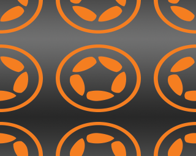

Repeating Fills
This guide outlines how to use repeating fills, a feature which allows a larger display object to be filled with a “tiled pattern” using either a repeat or mirrored repeat repetition mode. For each pattern, an x and y offset can be applied to the fill, and the fill can be rotated/scaled independently of the object. In addition, these fill settings can be applied either by explicit declaration or via a gradual transition to achieve a variety of animated effects.
Repeating Fill Modes
Before implementing repeating fills, the proper fill mode must be set for the particular situation. This is achieved by calling display.setDefault() with the "textureWrapX" and/or "textureWrapY" keys, along with one of the following wrap modes:
"clampToEdge"— This is the default mode; it clamps the texture to either the x or y direction. Clamped fills will not repeat in the clamped direction."repeat"— The fill will repeat in a tiled manner across the entire span of the filled object, as if identical tiles were simply laid out in the same orientation,side-by-side ."mirroredRepeat"— The fill will repeat in a mirrored pattern, wherein each neighboring tile will mirror the one beside it.
For example, considering a basic 160×128 rectangle vector object, a repeating fill along the x axis and a mirrored repeating fill along the y axis can be set as follows:
local rect = display.newRect( 0, 0, 160, 128 ) rect.x, rect.y = display.contentCenterX, display.contentCenterY display.setDefault( "textureWrapX", "repeat" ) display.setDefault( "textureWrapY", "mirroredRepeat" )
Applying Fills
With the vector object in place and the fill mode set along both axes, it can be filled with the example 64×64 image seen here:

Specifically, this can be done with one initial command that sets the fill property of the rect object to a Lua table containing two

rect.fill = { type="image", filename="logo.png" }
The first of these (type) tells Corona to fill the object with an image, and the filename key instructs that fill to be performed using the logo.png image.
The result of this command is the image at right which, by default, is stretched to fill the vector rectangle’s entire width and height. Thus, using just this minimal amount of code, there is no visual repetition with the declared texture wrapping modes — but that will be addressed in the next section.
When using either of the repeating fill modes "repeat" or "mirroredRepeat")
Scaling the Fill
Obviously, filling the entire shape with one stretched image doesn’t result in a repeating fill. To get the intended visual repetition in place, scaling methods must be used on the object fill. This requires just two additional lines of code:

rect.fill.scaleX = 0.5 rect.fill.scaleY = 0.5
This scales the fill image, but unfortunately it’s still stretched — the GPU simply takes the stretched fill texture and scales it to 50% on each axis.
To make the fill pattern retain its 1:1 ratio across the filled object, we can use simple math to calculate the proper scaling ratios, regardless of the target object’s width and height:
local scaleFactorX = 64 / rect.width local scaleFactorY = 64 / rect.height
Note that the first number in each calculation (64) indicates the width and height of the image used for the fill which, in this guide, is 64×64. To retain the proper 1:1 ratio for the fill, these numbers must be adjusted according to the width/height of the actual fill image being used. For example, if the fill image is 32×128, these values should be adjusted respectively as in 32 / rect.width128 / rect.height
With these calculated values, the repeating fill can be properly scaled as follows:

rect.fill.scaleX = scaleFactorX rect.fill.scaleY = scaleFactorY
The result is a 1:1 ratio for the fill repetition — meaning, the fill itself remains at its original size of 64×64 pixels, repeating within the bounds of the filled object and overflowing outside the edges as expected.
Offsetting the Fill
One common factor in the previous examples is that the fill pattern repetition is always centered within the filled object. No matter the scale, a fill “tile” will reside in the center of the object and then repeat outward in all directions, assuming neither of the axes is clamped ("clampToEdge").
While this default centering will probably work in most cases, offsetting a fill may sometimes be required. This can be accomplished by simply adjusting the x and y values of the fill, for instance:
rect.fill.x = 0.5 rect.fill.y = 0
Instead of setting a specific pixel value for the
xandyproperties, a value between-1and1is required. This tells the GPU to offset the pattern by a full repetition of the fill image’s width or height. So, setting0.5as thexproperty will shift the pattern half of one repetition distance along the x axis.Another important distinction is that setting a positive
xvalue will shift the pattern to the left, while a negativexvalue will shift the object to the right. Similarly, a positiveyvalue will offset the pattern upward, and a negativeywill offset it downward.
Aligning the Fill
Expanding on the fill offset concept, it’s sometimes necessary to align a fill to an object’s edges.
Since the size of the object being filled may not be evenly divisible by the fill image size, some clever calculations can be implemented to achieve consistent fill alignment:
local scaleOffsetX = ( ( rect.width - 64 ) / 2 ) / 64 local scaleOffsetY = ( ( rect.height - 64 ) / 2 ) / 64
Once again, the usage of (64) in these calculations indicates the width and height of the image used for the fill. To achieve proper alignment, these numbers must be adjusted according to the width/height of the actual fill image being used.
With these calculated values, the repeating fill can be properly aligned as follows:
- To align the fill to the left edge of the
rectobject:
rect.fill.x = offsetX
- To align the fill to the right edge of the
rectobject:
rect.fill.x = offsetX * -1
- To align the fill to the top edge of the
rectobject:
rect.fill.y = offsetY
- To align the fill to the bottom edge of the
rectobject:
rect.fill.y = offsetY * -1
Rotating the Fill
The final potential adjustment is to rotate the fill independently of the object:

rect.fill.rotation = 30
Fill rotation is simply performed in familiar degrees from 0 to 360. Note that rotation is applied around the center of the filled object and cannot be set to an anchor point (fills do not respect the anchorX or anchorY properties).
Transitioning the Fill
A final powerful feature of repeating fills is the ability to transition them via basic Corona transitions. This allows you to move, rotate, or scale the fill pattern within the filled object, and independently so of any transition/movement that may be occurring on the filled object itself.
The key aspect in a successful fill transition is pointing to the fill property of the filled object as the target of the transition, in this case rect.fill. For instance:
transition.to( rect.fill, { time=4000, x=0.5 } )
transition.to( rect.fill, { time=4000, rotation=80 } )
transition.to( rect.fill, { time=4000, scaleX=0.5, scaleY=0.4 } )
Note that this capability allows you to perform a variety of interesting effects upon an object, for example, a repeating pattern “flowing” slowly across the filled object in an endless cycle (iterations=-1):
transition.to( rect.fill, { time=4000, x=rect.fill.x-1, iterations=-1 } )